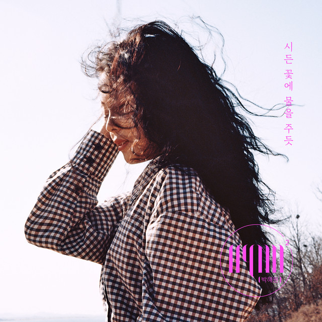

안녕하세요 라보엠입니다.
2019년 3월 31일, 가요계에 새로운 바람을 일으킬 한 곡이 발매되었습니다. HYNN(박혜원)의 "시든 꽃에 물을 주듯"이 바로 그 주인공입니다. 이 곡은 발매 당시에는 큰 주목을 받지 못했지만, 시간이 지나면서 점차 입소문을 타기 시작했고, 결국 발매 6개월 만에 음원 차트 1위라는 놀라운 성과를 이뤄냈습니다.

HYNN(박혜원) - 시든 꽃에 물을 주듯
이 노래는 식어버린 연인의 마음을 시든 꽃에 비유한 감성적인 발라드곡입니다. HYNN의 폭넓은 보컬 스펙트럼이 돋보이는 이 곡은 저음부터 고음까지 한계 없이 넘나드는 가창력으로 리스너들의 마음을 사로잡았습니다.
특히 엔딩 부분 클라이맥스에서 들려주는 고음은 HYNN의 트레이드마크라고 할 수 있는 파워풀한 고음의 진수를 보여줍니다. 이런 폭발적인 고음 때문에 HYNN은 '헬고음녀'라는 애칭을 얻기도 했습니다.
HYNN(박혜원) - 시든 꽃에 물을 주듯 가사
아무말도 아무것도 여전히 넌 여기 없고
널 원하고 널 원해도 난 외롭고
꽃이 피고 진 그 자리
끝을 몰랐었던 맘이
깨질 것만 같던 그때 우리, 음
시든 꽃에 물을 주듯
싫은 표정조차 없는
결국엔 부서진 여기 우리, 음
다 잊었니 말없이 다 잊었니
사랑한단 말로 날 가둬둔 채로
넌 잊었니 난 잊지 못하나봐 oh, oh
바보처럼 기다려 난 오늘도
어쩌다 이렇게 됐지
너무 예뻤잖아 둘이
매일 설레였지 그때 우린, 음
시든 꽃에 물을 주듯
싫은 표정조차 없는
결국엔 부서진 여기 우리 oh
다 잊었니 말없이 다 잊었니
사랑한단 말로 날 가둬둔 채로
넌 잊었니 난 잊지 못하나봐
바보처럼 기다린
바보처럼 빈 자릴 붙잡는 나 oh, oh, no, no
차라리 다 끝났다고 말해줘
이기적인 그 침묵에 또 나만 oh
바보처럼 미련한 내가 미워
아무말도 아무것도 여전히 넌 여기 없고
널 원하고 널 원해도 난 지쳐가
노래의 가사는 시인 못말이 맡아 완성했습니다. 마치 머릿속에 그림이 그려지듯 시적인 노랫말로 사랑의 마지막 순간에 다다른 연인의 애틋한 모습을 담아냈습니다.
"시든 꽃에 물을 주듯 / 싫은 표정조차 없는 / 결국엔 부서진 여기 우리 음"
이 구절은 이미 끝나버린 관계를 붙잡으려는 한 사람의 안타까운 모습을 절절하게 표현하고 있습니다. 많은 리스너들이 이 가사에 공감하며 자신의 경험을 투영했을 것입니다.
커버 열풍
이 노래의 인기는 여기서 그치지 않았습니다. 발매 후 오랜 시간이 지났음에도 불구하고 많은 유명 가수들과 유튜버, 일반인들이 이 곡을 커버하며 그 인기를 이어갔습니다. EXID의 솔지, 권인하, 임한별, 정동원 등 실력파 가수들이 이 곡을 커버하며 각자의 색깔로 재해석했습니다. 특히 권인하의 커버 버전은 '시든 꽃에 대포를 쏘듯'이라는 별명을 얻으며 인터넷을 뜨겁게 달구기도 했습니다. 개인적으로는 WSG 워너비에서 함께 활동한 박보람의 커버를 가장 좋아합니다.
HYNN(박혜원)은 누구인가요?
HYNN(박혜원)은 2016년 '슈퍼스타K'에 '인천 에일리'라는 별명으로 출연하며 주목받기 시작했습니다. 2018년 HYNN(박혜원) 이라는 예명으로 첫 싱글 'LET ME OUT'을 발매하며 본격적인 가수 활동을 시작했습니다.
유희열, 양파, 벤, 허각 등 실력파 선배 가수들의 극찬을 받은 HYNN(박혜원)은 '완성형 보컬리스트'라는 평가를 받고 있습니다. 특히 유희열은 HYNN에 대해 "김나박이(김범수, 나얼, 박효신, 이수)를 잇는 대형 가수의 느낌"이라고 평가하기도 했습니다.
이 노래의 성공으로 '여자 발라더 신성'이라는 타이틀을 얻은 HYNN(박혜원)은 이후에도 꾸준히 활동하며 자신만의 음악 세계를 구축해 나가고 있습니다.
역주행의 신화
이 노래는 발매 당시에는 큰 주목을 받지 못했지만, 시간이 지나면서 점차 입소문을 타기 시작했습니다. 다양한 버스킹 무대와 라이브 영상들이 SNS에서 폭발적인 화제를 모으면서 HYNN은 KBS 2TV '유희열의 스케치북'에 출연하는 등 괄목할 만한 성장을 이뤄냈습니다. 결국 이 곡은 발매 6개월 만에 주요 음원 차트 1위를 차지하는 기적 같은 일을 이뤄냈습니다. 이는 HYNN이 데뷔한 지 채 1년도 되지 않은 시점에서 이룬 성과라 더욱 놀랍습니다.
맺음말
시든 꽃에 물을 주듯은 단순한 히트곡을 넘어 한 아티스트의 성장과 음악의 힘을 보여준 의미 있는 곡입니다. HYNN(박혜원)의 폭발적인 가창력과 감성적인 가사, 그리고 리스너들의 공감이 만나 만들어낸 이 곡은 앞으로도 오랫동안 많은 이들의 플레이리스트에 남아있을 것입니다.